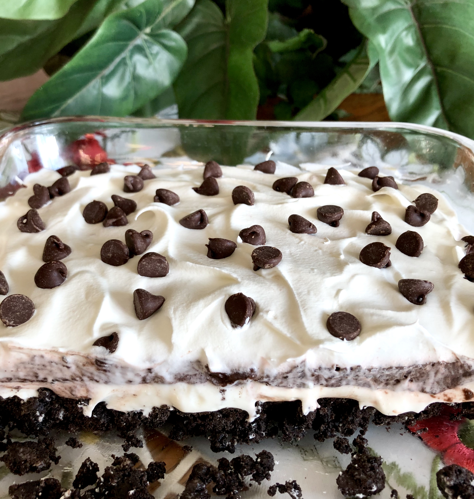

Oreo Lasagna

Description for the oreo lasagna.
A paragraph for describing the oreo lasagna.
Ingredients
- 1 (14 ounce) package chocolate sandwich cookies (such as Oreo®)
- 6 tablespoons butter, melted
- 1 (8 ounce) package cream cheese
- ¼ cup white sugar
- 2 tablespoons milk
- 1 (12 ounce) container frozen whipped topping (such as Cool Whip®), thawed, divided
- 2 (3.9 ounce) packages instant chocolate pudding mix
- 3 ¼ cups milk
- 1 ½ cups mini chocolate chips
Steps
- Crush chocolate sandwich cookies. Mix in butter. Press mixture into a 9x13-inch baking pan to make the crust. Refrigerate crust.
- Beat cream cheese until fluffy. Add sugar and 2 tablespoons milk; mix well. Stir in 1 1/4 cup whipped topping. Spread mixture onto the crust and refrigerate.
- Mix pudding with 3 1/4 cups milk until thickened, about 5 minutes. Spread over the cream cheese layer. Refrigerate lasagna for 10 minutes.
- Spread remaining whipped topping over the lasagna and sprinkle with chocolate chips. Refrigerate for 4 hours.